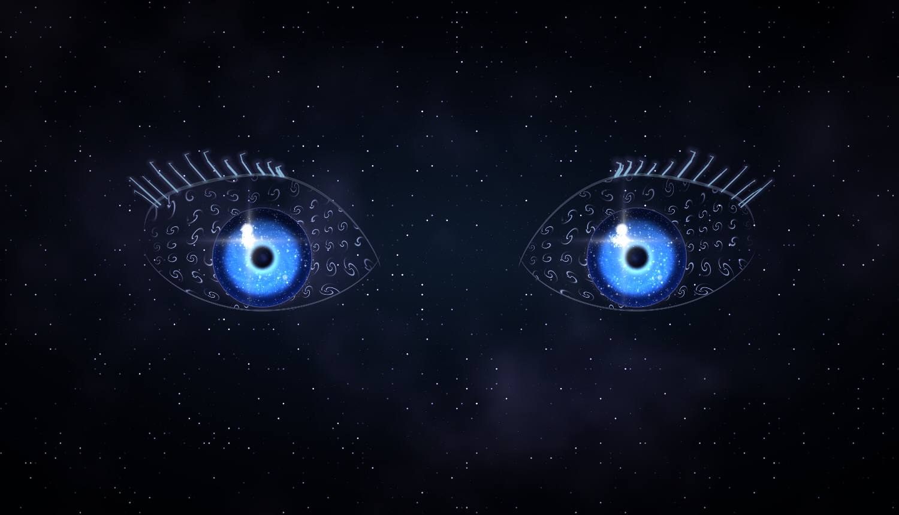
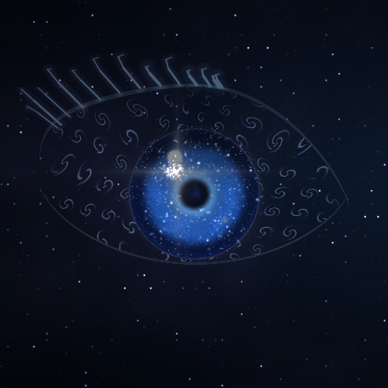
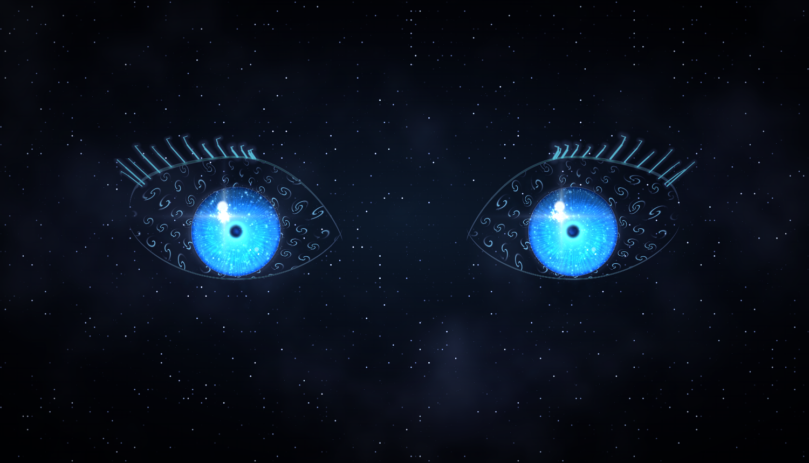
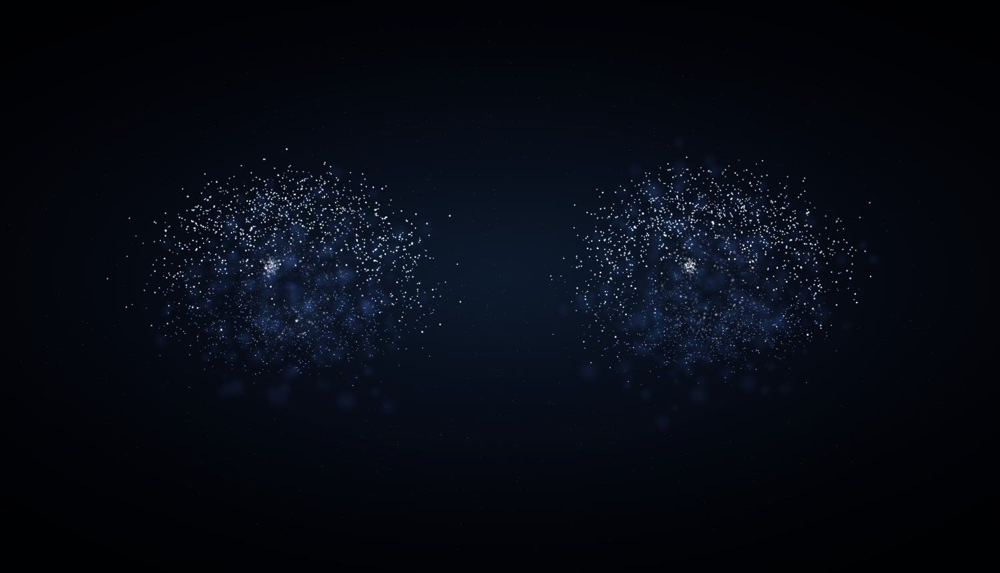
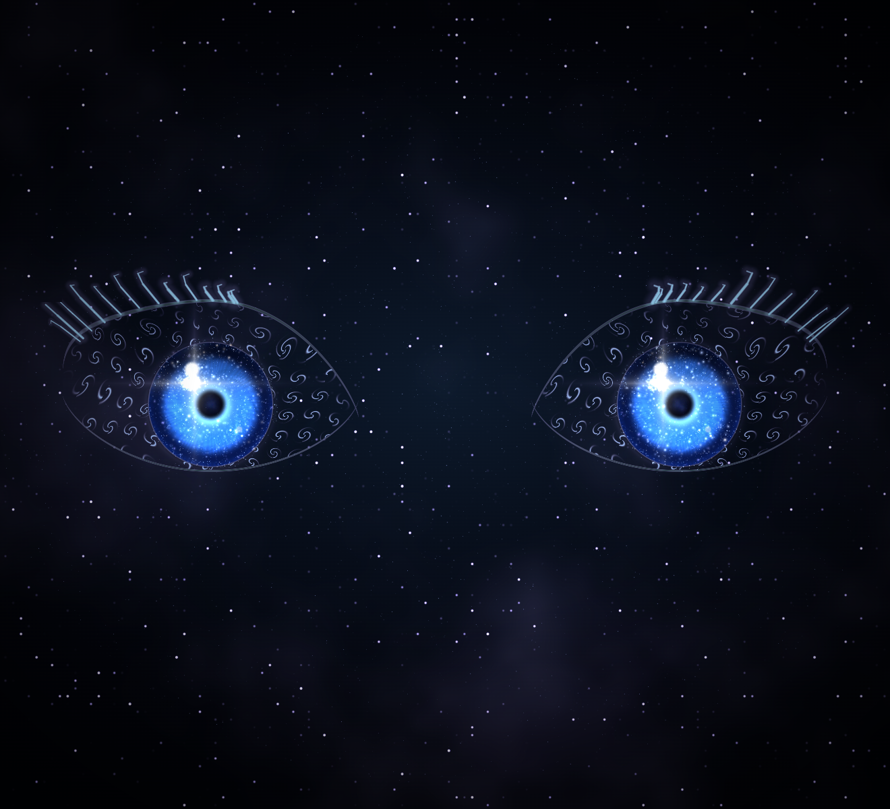
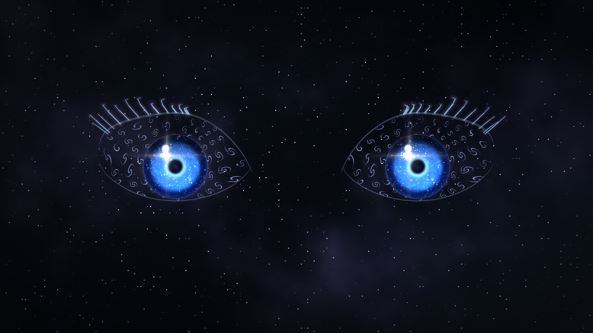
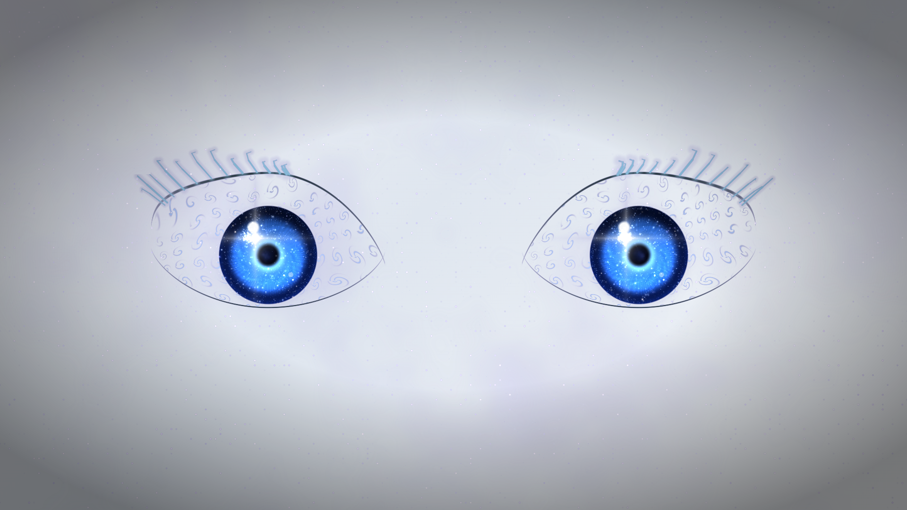

没有面孔，没有身体，没有可上传的球。只有一双眼睛悬在星云虚空里，看着你。
参考素材提供的三件事被完整保留了：涂满螺旋的眼白、星系一样的虹膜、长而外张的睫毛。

阿罗德斯的核心职责是注视与陪伴——它看你屏幕、看你做题、在你卡住的时候出声。 「注视」这件事，最短的表达路径就是一双眼睛。EmotionBall 小球能挤压变形，但它 表达不了「正在看着你」。
为了这种简单，牺牲了三件事：
形象由三层构成，每层都能单独关掉。下表是实测消融数据——在左眼方框内逐层关闭后 测平均亮度，看这一层到底在画面里占多少分量：
| 层 | 做法 | 关掉后 Δ | 影响 |
|---|---|---|---|
| ① 虚空星云 | 全屏 fbm 星云 + 稀疏星点，眼周提亮 | 基准 | |
| ② 螺旋眼白 | 眼白 alpha 归零成虚空，螺旋光纹浮在虚空里 | −1.17 | |
| ③ 星系虹膜 | 极坐标旋涡 fbm + 稀疏星团 + 十字星芒 | −0.82 | |
| ④ 十字星芒 | 四角 exp 衰减，参考图 2 虹膜里那束星 | −1.12 | |
| ⑤ 睫毛 | 13 根锥形光丝，贝塞尔采样切 3 段递减 | −1.63 | |
| ⑥ 睑线 | 暗色眼型轮廓，睫毛的落点 | −0.90 |

同一套几何，靠两个运动量（合聚 0→1、观察 0→1）驱动，不重烘、不换模型。


桌宠窗口固定 660×600。形象必须在这个尺寸里成立，否则再好看也不算数。

min(1, aspect/0.92) 在 aspect=1.1 时恒等于 1，等于完全没收，
两只眼睛会被窗口左右边缘各切掉一截。
决策：替换 EmotionBall，并新增全屏透明背景窗，让星云铺满整个桌面。
这引出一个必须先验的风险：星云是直接画在用户桌面上的。 桌面可能是 Word 的白底，也可能是深色 IDE。同一套配色要在两端都成立， 否则用户写文档时屏幕上会浮着一层灰。
| 模拟桌面底 | 无叠加 | 有叠加 | 变化 |
|---|---|---|---|
| 浅色（白底文档） | 189.2 | 182.2 | −7.0 |
| 中灰（深色 IDE） | 38.7 | 43.4 | +4.7 |
| 近黑（参考图那种） | 12.9 | 19.6 | +6.7 |
voidA #211a4c / voidB #6b61c7 再乘暗系数），
结果在浅色桌面上把星点变成了一层「黑芝麻」，整片桌面被压暗 8.9。
改成加亮型（voidA #574798 / voidB #b8a8ff）后，暗点完全消失。

| 旋钮 | 当前值 | 说明 |
|---|---|---|
| 眼距 / 整体大小 | 1.58 / 0.46 | 眼裂不能塞满虹膜，否则看成两个圆盘 |
| 上睑高度 / 下睑比例 | 0.70 / 0.64 | 眼裂约 2.2 : 1 |
| 虹膜半径 | 0.420 | >0.50 会被上下睑切成桶形 |
| 螺旋密度 / 圈数 / 线宽 | 6.60 / 22 / 3.00 | 圈数 <12 出来的是逗号不是螺旋 |
| 星云 / 星团 / 星芒 | 0.42 / 0.48 / 0.90 | 星团 >1.0 变雪花噪点 |
| 睫毛 数量/长度/粗细 | 13 / 0.22 / 0.0095 | 数量设 0 即整段短路，不画睫毛 |
| 角膜缘暗环 | 0.40 | >0.6 会在虹膜外圈压出一圈贴上去的黑边 |
全部旋钮在 prototype/particle-eyes/tuner.html 里，新增「星象」标签页，
另附「诸神」预设一键回到本稿状态。
| 决策 | 结论 |
|---|---|
| EmotionBall | 替换。桌宠形象改由实体眼着色器接管 |
| 全屏背景窗 | 加。星云铺满桌面，使用加亮型配色 |
| 尺寸与位置 | 沿用默认（偏小、居中）。全屏窗只是背景，眼睛不该占满屏幕抢注意力 |
由此产生三条硬约束：
win.setIgnoreMouseEvents(true, { forward: true })，否则整个桌面点不动。
附：本稿所有图像由 prototype/particle-eyes/shoot-face.cjs（定妆图 + 分层消融）与
check-bg-overlay.cjs（三档桌面叠加实测）无头 Chrome + SwiftShader 生成，可重复出图；
数据见 shots/face-report.txt。